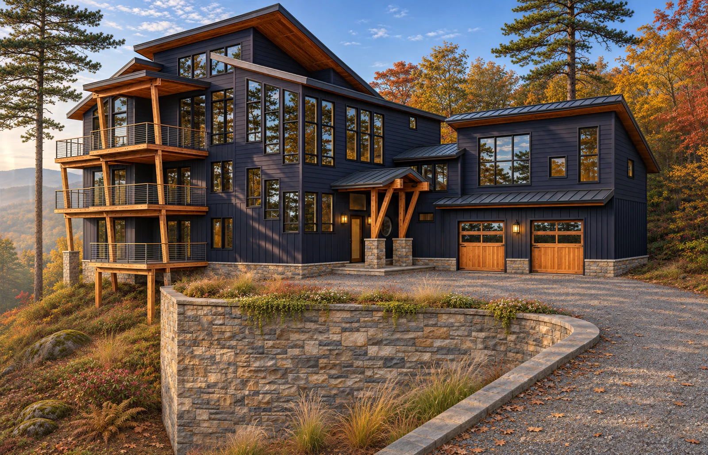

Lot 16, the free draft of the main view
The house at Grove Park Cove from the drive, in four finishes on an autumn afternoon.
- Prepared for
- Dan Grammatico and Brad Moore
- Builder
- Grammatico Homes
- Architect
- J. Bradley Moore & Associates
- Date
- November 2026
- Home
- Lot 16, Grove Park Cove, Asheville
- View and renderings
- Alex and Alexandra Lane, Tovizy

Dan, Brad,
Here is the free draft of the main view from the drive, as promised on our call. It uses the camera and the house from Brad’s Revit model, the version with the lower garage.
You asked for a painted and a rustic version. The painted one is in Dan’s own deep navy, the rustic one in thermally modified wood with a fieldstone base. We added two more paint colors so you can compare: a warm charcoal and a slate blue-gray. The light, the season and the site are the same in all four, only the finish changes.
This is a concept draft. For the finals we follow your construction drawings and selections, and you get two rounds of changes.
Alex LaneTovizy, 3D visualization studio
The two versions you asked for.
Tap a picture to see it larger. Each one can be saved at full size, 5120 pixels wide.
Navy. Dan’s deep navy paint, cedar posts, trim and garage doors, stacked stone. Full size, 5120 px

Rustic. Thermally modified wood in natural brown, heavy cedar timbers, fieldstone base and walls. Full size, 5120 px

Two more paint colors to compare.
The same house, light and season, with a different siding color.
Warm charcoal. Board and batten in a warm brown-gray, cedar garage doors. Full size, 5120 px
Slate blue-gray. A lighter board and batten, black windows and garage doors. Full size, 5120 px


What happens next.
Pick a finish
One of the four, or a mix: tell us which siding, trim and stone you prefer.
The Lot 16 package
Three exterior views, the 30-second fly-around and the buyer page, with the two material versions free.
Two rounds of changes
Finals in about two to three weeks from the start.
Tell us what you think.
Reply to my email with your notes, or tell us which finish to take forward.